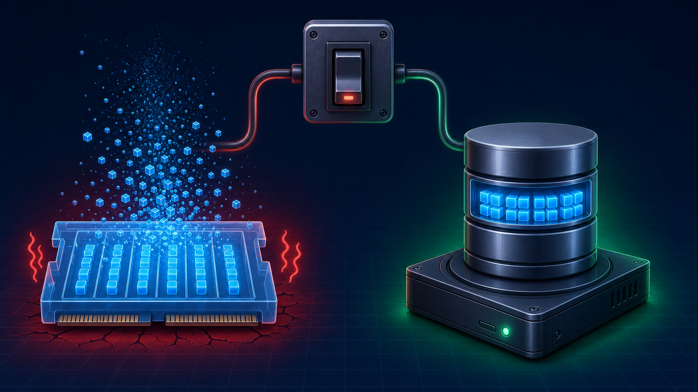

3편 · 44분 — 데이터를 디스크에 저장하기
메모리에 있던 users가 왜 증발하는지 짚고, MySQL·워크벤치를 설치한다.

✗ 메모리 — 서버가 꺼지면 증발
✓ 데이터베이스 — 디스크에 계속 보존
테이블을 만들고 순수 SQL로 데이터를 넣고·읽고·고치고·지운다.
CREATE SCHEMA / CREATE TABLE (users, comments) — 타입·PK/FKINSERT / SELECT (WHERE · ORDER BY · LIMIT)UPDATE / DELETE — 데이터는 박서연| 동작 | SQL |
|---|---|
| Create | INSERT INTO users ... |
| Read | SELECT * FROM users WHERE id=1 |
| Update | UPDATE users SET ... WHERE id=1 |
| Delete | DELETE FROM users WHERE id=1 |
SQL을 매번 문자열로 짜기 귀찮죠? JS답게 쓰는 법이 다음 시간.
ORM은 통역사. 방금 배운 SQL 지식을 그대로 자산으로 쓰는 드리즐을 익힌다.
SELECT * FROM users WHERE id = 1;
db.select() .from(users) .where(eq(users.id, 1));
drizzle-kit으로 DB 동기화insert/select/update/delete + 조인·집계